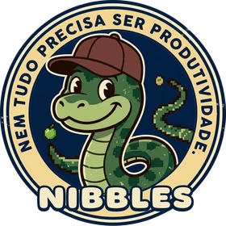

Lançamento
SyncLumen
Gráficos que dançam com a música, com fundo transparente, prontos para entrar numa trilha acima do seu vídeo.
Conhecer o SyncLumenSou J. R. Cid Pacheco. A CIDesign reúne o que eu crio: apps para a escola e o ateliê, ferramentas para quem edita vídeo, e livros e música pelo selo O Sopro.
Lançamento
Gráficos que dançam com a música, com fundo transparente, prontos para entrar numa trilha acima do seu vídeo.
Conhecer o SyncLumenLivro
Dois mil anos de história, das raízes judaicas à diversidade moderna, em 612 páginas.
Ler o capítulo 1Chamada e frequência sem papel, com QR Code.
Chamada escolar simples, rápida e 100% offline, no Android ou no navegador, inclusive no iPhone.
App e portal do professor para chamada, notas e trabalhos: a sala de aula inteira num lugar só.
Overlays de áudio com fundo transparente para o seu editor de vídeo.
ConhecerDesenhe padrões de pulseiras de miçangas sem papel quadriculado, ou gere um a partir de uma foto.
AbrirCalcule o preço de peças impressas em 3D, com margem configurável, e gere o orçamento.
AbrirConteúdo e indicadores para quem trabalha com cash management.
VisitarO lado autoral: música e livros inspirados nas Escrituras.
Cânticos autorais inspirados nos Salmos e nos Profetas, e os livros do autor, numa página só.
Visitar o seloO site do livro tem o capítulo 1 para ler, galeria, linha do tempo e glossário.
Ver o livroNem tudo precisa ser produtividade. Dois clássicos que marcaram gerações, de volta no navegador.

Nibbles O jogo da cobrinhaA CIDesign é onde eu reúno o que construo: apps, ferramentas web, livros e música. Em cada projeto, a ideia é a mesma: resolver um problema concreto e cuidar do acabamento.